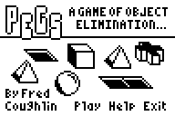
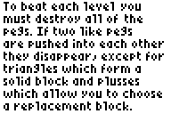
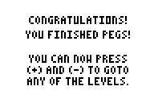

Pegs
The game Pegs for the TI-83+ graphing calculator, ported to the browser.
The original Pegs was part of PuzzPack by Detached Solutions, and its main developer was Fred Coughlin. This port is by Rory O’Kane. It is open-source.
Play
 


Controls
- arrow keys to move or change your selection
- Space or Enter to confirm
- Esc to exit
- R to reset the current level
- After you beat the game, + and - change levels
See also
My Pegs in PuzzleScript game is another port of Pegs. Instead of reproducing all aspects of Pegs as exactly as possible, it adds color, sound effects, and an Undo Move feature.